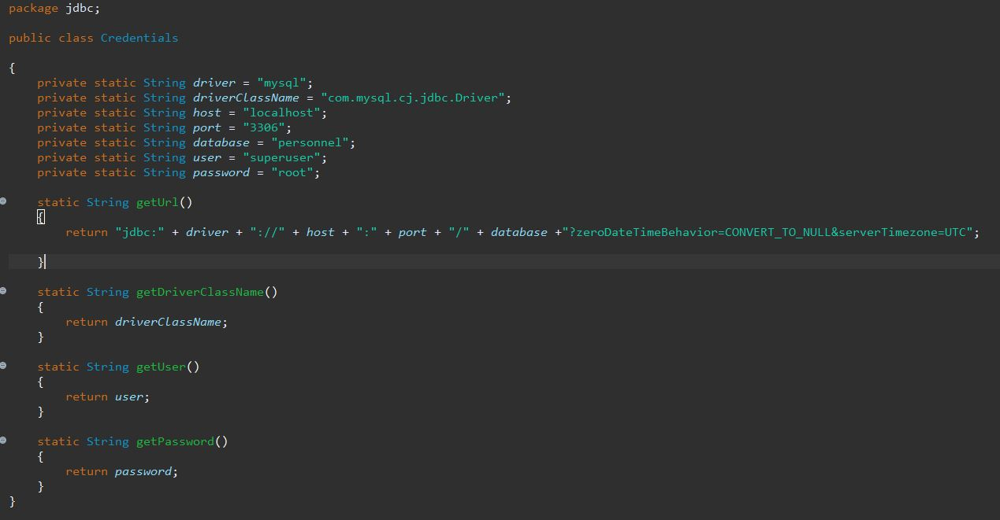

Personnel est un projet d'application en Java effectué lors de ma deuxiéme année de BTS. Celle-ci permet de gérer des ligues ainsi que leurs membres en fournissant des droits à des administrateurs de ligue dans le contexte de la M2L.
Cette application, n’existe qu’en ligne de commande et est mono-utilisateur. Nous devions désigner un administrateur par ligue et lui confier la tâche de recenser les employés de sa ligue. Une partie du travail est déjà faite mais nous avons dû le compléter.
Premièrement nous avons dû concevoir puis créer la base de données, nous avons utilisé looping pour créer le MCD et MYSQL pour créer la Base.
Via java nous avons connecté l'application à notre base de données.
Nous avons ensuite utilisé la classe JDBC pour transmettre les requêtes sql de l'application à la base.
Nous avons par la suite commencé à apporter différentes modifications au code de l'application, pour y rajouter des éléments nécessaires.
Par exemple : nous avons ajouté un constructeur à la classe employée dans laquelle nous avons rajouté les dates d’arrivée et de départ au format compris par MYSQL d’un employé. Ainsi que l'ajout d'exceptions.
Si vous voulez en savoir plus, consultez la documentation :
DocPersonnel.pdfVous pouvez aussi accéder au repository github du projet en cliquant ici